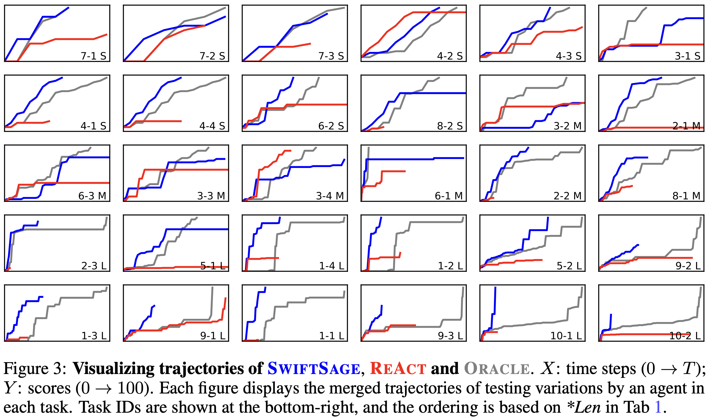

[show more]
Efficiency. To thoroughly examine the efficiency of agents across all task types, we use Figure 3 to visualize the average trajectories of the first three testing variations for each task involving LLM-Blender, ReAct, and the oracle agent. We arrange the tasks based on their average lengths of oracle trajectories (*Len in Table 1). We observe that oracle trajectories consistently achieve perfect scores, yet LLM-Blender can reach similar scores more efficiently. This is particularly evident in longer tasks (the bottom two rows), although LLM-Blender does not achieve a perfect score for a few tasks (e.g., 9-2 and 1-3). Interestingly, we find that ReAct performs competitively in shorter tasks (e.g., 4-2 and 3-4), but most trajectories plateau at an intermediate score and fail to reach 100.
Cost-effectiveness. Despite SAGE invoking LLMs APIs twice for inference, its overall cost remains lower, as the result is a sequence of actions typically containing about 5 actions. In comparison, SayCan and ReAct require 1,855.84 and 1,971.03 tokens per action (tpa) respectively, while Reflexion necessitates 2,983.46 tpa. LLM-Blender, on the other hand, only uses 757.07 tpa. Given its superior performance, LLM-Blender proves more cost-effective than other LLM-based methods. This efficiency is primarily attributed to invoking LLMs only when needed (courtesy of our strong SWIFT module) and the action buffer mechanism.